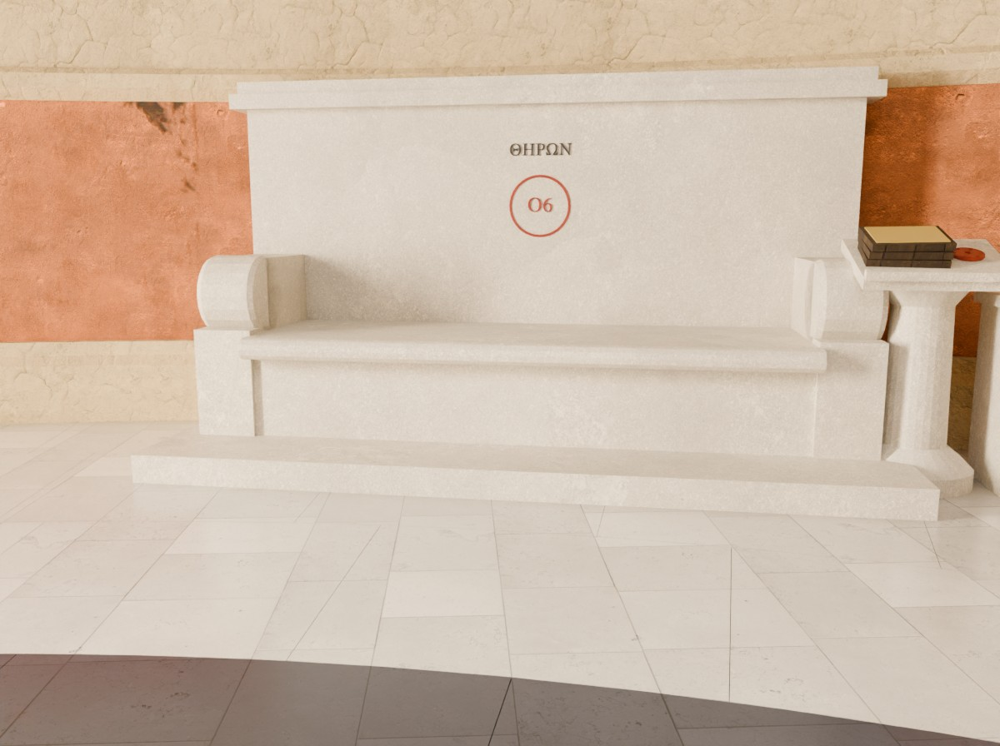

Can a replicated service keep all of its commands in the exact same order when some of its machines lie, including the leader, and when messages across the network can be delayed for arbitrarily long?
To find out, we return to the Tholos of Schedia. All five legislators have sailed across the sea, leaving four unvetted stewards in charge of the council's law scroll—ensuring that every honest copy records the same lines in the same order even when one of them, the writer included, is a liar.
We find out by following the protocol directly: four replicas of a service, one of which may be faulty, the primary included, that must keep every copy of the log in the same order while messages can be delayed for any length of time.
After Miguel Castro and Barbara Liskov, Practical Byzantine Fault Tolerance, 1999
Each link traces an idea that one paper borrowed from another. Point at a link, or tap it, to see how.
a paper this book retells a paper retold in another book a paper outside the series
Schedia's five legislators—Okios, Liskovia, Kleon, Melissa, and Theron—have boarded a galley and sailed across the sea on an embassy, leaving the Tholos in the charge of four unvetted stewards: Numbers 1, 2, 3, and 4.* On the old council, honesty was taken for granted: nobody lied. But these four stewards are untested. Shortly after the legislators' ship clears the harbour headland, a messenger brings a note that contradicts another: someone in the hall is lying. At most one steward may be a liar, and with four stewards in all, a single liar is the most the honest three can tolerate.Four replicas of a service communicate only by messages. Any one of them may be faulty, and with four replicas in all, a single faulty replica is the most the three honest ones can tolerate.
Because no voice carries across the open limestone floor of the Tholos, the four stewards maintain the council's law scroll, one complete copy on wax tablets at each bench, recording every decree and ordinance passed by the city.Four replicas each keep a complete copy of a service's state, such as a ledger recording who owns what.
The law grows one line at a time. A line is a single decree added to the law, such as harbour dues are two obols a hull or the cove is closed to nets in spring, and any citizen at the door may petition for one. Crucially, every honest copy of the scroll must record the lines in the exact same order, because the meaning of a new line depends on what the scroll already says. Two copies that wrote the same lines in different orders could end up giving contradictory answers to citizens—halving harbour dues that have not yet even been set.The log grows one request at a time. A request is a single operation on the service, such as set the third key to this value or transfer the cups to client 3, and any client may submit one. Crucially, every honest replica must execute the requests in the exact same order, because the meaning of a new request depends on what the state already holds. Two replicas that executed the same requests in different orders could end up giving the same asset to two different owners.
Furthermore, the stewards sit far apart, sandglasses drift out of step, and messengers can be delayed arbitrarily across the stone floor: the stewards cannot rely on synchronized clocks to agree on the time.*Furthermore, the network is asynchronous: the replicas’ clocks are not synchronized, and no bound is known on how long a message takes.*
The four stewards require two strict guarantees for their law scroll, and the two guarantees hold under very different conditions:The replicas must provide two guarantees for the service, and the two hold under very different conditions:
Every honest copy writes the exact same lines in the exact same order. Together, the copies behave as if there were only a single scroll written by one hand at a single moment between when a line is petitioned and when it stands (linearizability).*Every honest replica executes the exact same requests in the exact same order. Together, the replicas behave as if there were only a single copy that executed each request at a single moment between when it is submitted and when it commits (linearizability).*
Every line petitioned by an honest citizen eventually stands (commits) in the scroll, provided messengers cross the floor without endless delays.Every request submitted by an honest client eventually commits, provided delays become short and stay short for long enough.
Order must never be violated, no matter how long messengers dawdle across the stone floor, because nobody can tell when delays have ended. Progress, by contrast, cannot be guaranteed while messengers are detained indefinitely, otherwise the mercenaries at the foot of the hill could solve agreement with arbitrarily slow birds, which is impossible.*Order must never be violated, no matter how long messages are delayed, because nobody can tell when delays have ended. Progress, by contrast, cannot be guaranteed while messages are delayed arbitrarily, otherwise consensus could be solved in the asynchronous model, which is impossible.*
We have four copies of the scroll, one liar among the four stewards, and messengers who can be delayed across the floor for an unknown time. First, someone must be put in charge of assigning each line its place in the law.We have four replicas, one faulty among them, and a network that can delay any message for an unknown time. First, someone must be put in charge of assigning each request its place in line.
Safety: the replicated service is linearizable (no two non-faulty replicas execute different requests at the same sequence number). Liveness: clients eventually receive replies to their requests, provided at most ⌊(n − 1)/3⌋ replicas are faulty and network delay(t) does not grow faster than t indefinitely. (Castro and Liskov, §§2–3.)
To keep every copy of the law scroll in the same order, each line is given a sequential number (1, 2, 3, …) so that every bench can write lines in number order. Assigning those numbers is the job of a single leader at a time, who holds the office of the writer (the paper's primary). The office does not belong permanently to Steward 1: in the Tholos, leadership rotates in turn among the four benches.*To keep every replica's log in the same order, each request is given a sequential number (1, 2, 3, …) so that every replica can execute requests in number order. Assigning those numbers is the job of a single leader at a time, the primary. The job does not belong permanently to R1: leadership rotates.*
The writer's office starts with Steward 1. Whenever the office passes, it rotates around the benches in number order: 1, 2, 3, 4, and back to 1. Each spell under a single writer is called a term (the paper's view), and because terms are numbered sequentially, the term number alone tells every steward who the current writer is.The primary's job starts with R1. Whenever the primary role passes, it rotates around the replicas in number order: R1, R2, R3, R4, and back to R1. Each period under a single primary is called a view (view v), and because views are numbered sequentially, the view number alone tells every replica who the current primary is.

When a citizen brings a petition to the door, it goes to the current writer. The writer assigns it the next sequence number and announces that numbering to the other benches by runner. Once the four benches have cross-checked the numbering, every honest steward writes the line into their scroll in number order and sends the petitioner a sealed confirmation that the decree stands.When a client wants to add a request to the log, it signs the request and sends it to the current primary. The primary assigns it the next sequence number and announces that numbering to the other replicas. Once the four replicas have cross-checked the numbering, every honest replica executes the request in number order and sends the client a signed reply confirming that the request commits.
Because any of the four stewards may hold the writer's office, including the liar, no one can trust the writer's word alone. Every part of the arrangement that follows is designed to defend against a lying writer who tries any of three tricks:Because any of the four replicas may be the primary, including the faulty one, no replica can trust the primary's assignment alone. Every part of the protocol that follows is designed to defend against a faulty primary who tries any of three kinds of misbehaviour:
The writer assigns the same sequence number (say, line 7) to two different decrees.The primary assigns the same sequence number (say, 7) to two different requests.
The writer sends one numbering to some benches and a conflicting numbering (or nothing at all) to the rest.The primary sends one numbering to some replicas and a conflicting numbering (or nothing at all) to the rest.
An honest citizen petitions a line, and the writer simply ignores it and numbers nothing.An honest client submits a request, and the primary simply ignores it and numbers nothing.
How a petitioner knows their decree stands: a citizen waiting at the door of the Tholos waits for two matching sealed replies from different benches. Since at most one steward lies, two matching confirmations guarantee that at least one honest steward has written the line into the law. (A steward petitioning from their own bench knows a line stands the moment it stands in their own copy of the scroll.)How a client knows its request committed: a client that does not hold a copy of the log waits for f + 1 = 2 matching signed replies from different replicas; since at most one replica is faulty, two matching replies guarantee that at least one honest replica has committed the request. (A replica acting as its own client knows its request committed as soon as it commits in its own log.)
To defeat the writer's first two tricks, numbering two different lines with the same number or splitting the benches, the stewards must cross-check every numbering before they write anything into their scrolls.To defeat the primary's first two tricks, numbering two different requests with the same number or splitting the replicas, the replicas must cross-check every numbering before they execute anything.
The stewards verify the writer's numbering by echoing it to one another twice. A line stands only after the writer has numbered it (pre-prepare) and the stewards have completed a first echo (prepare) and a second echo (commit). Every strip is sealed in wax with a personal bronze signet, and every steward keeps the sealed strips they receive in a log so they can prove what happened later. Scroll through the six steps below to follow a single line from petition to standing.The replicas verify the primary's numbering by echoing it to one another twice. A request commits only after the primary has numbered it (pre-prepare) and the replicas have completed a prepare round and a commit round. Every message is signed, and every replica keeps the signed messages it receives in a log so it can prove what happened later. Scroll through the six steps below to follow a single request from submission to commit.
A citizen petitions Steward 2 at the door. Steward 2 stamps the petition with their seal and sends it by runner across the floor to the current writer, Steward 1.Replica R2 wants to record a request in the log. It signs the request and sends it to the current primary, R1.
The writer assigns the line sequence number 7 and sends a sealed numbering (pre-prepare) to all the other benches. Suppose a runner to Steward 4 is delayed across the stone floor; nobody waits for them.The primary assigns the request sequence number 7 and sends a signed numbering (pre-prepare) to all the other replicas. Suppose the network delays the message to R4, nobody waits for it.
Stewards 2 and 3 check that they have not already accepted a different line for number 7 in this term. Each accepts the numbering and sends a sealed first echo (prepare) to every bench: "In this term, I heard that line 7 is this decree."R2 and R3 check that they have not already accepted a different request for number 7 in this view. Each accepts the numbering and sends a signed prepare message to every replica: "In this view, I received the assignment that request 7 is this operation."
Once a steward holds the writer's numbering plus two matching first echoes from benches other than the writer, three distinct seals in all on the same line and number, the line is readied (prepared) at that bench. Benches 1, 2, and 3 now have line 7 readied.Once a replica holds the primary's numbering plus two matching prepares from replicas other than the primary, three distinct signatures in all on the same request and number, the request is prepared at that replica. R1, R2, and R3 now have request 7 prepared.
Each steward who has the line readied sends a sealed second echo (commit) to every bench: "In this term, line 7 is readied at my bench."Each replica that has the request prepared sends a signed commit message to every replica: "In this view, request 7 is prepared at my replica."
Once a steward holds a readied line plus three matching second echoes (including their own), the line stands (committed-local) at that bench. Line 7 now stands at Benches 1, 2, and 3, even though Steward 4 was delayed across the floor the entire time.Once a replica holds a prepared request plus three matching commits (including its own), the request commits (committed-local) at that replica. Request 7 now commits at R1, R2, and R3, even though R4 was cut off by delays the entire time.
As soon as a line stands at a bench and every lower-numbered line (1 through 6) has already been written, the steward writes line 7 into their copy of the scroll and sends a sealed confirmation to the citizen at the door. Because runners can arrive out of order, line 9 might stand before line 8; when that happens, the steward holds line 9 in memory and waits to write it until line 8 stands as well, never leaving a gap in the law.As soon as a request commits at a replica and every lower-numbered request (1 through 6) has already been executed, the replica executes request 7 and sends a signed reply to the client. Because messages can arrive out of order, request 9 might commit before request 8; when that happens, the replica holds request 9 in memory and waits to execute it until request 8 commits as well, never leaving a gap in the log.
Notice that no step ever waits for all four benches. Every stage requires only three matching seals out of four, so a single steward whose messenger is delayed across the stone floor, or a single liar who refuses to answer, can never block the other three from making progress.Notice that no step ever waits for all four replicas. Every stage requires only three matching signatures out of four (2f + 1), so a single replica whose messages are delayed, or a single faulty replica that refuses to answer, can never block the other three from making progress.
Why two echoes are needed: the two echoes solve two distinct problems. The first echo (reaching readied) locks in the order within a single term: even if the writer lies and sends different decrees for line 7 to different benches, no two honest benches can ever ready different lines for number 7 in the same term. The second echo (reaching standing) locks in the order across terms: once a line stands at even one honest bench, enough honest stewards have it readied that any future writer in a later term will be forced to keep it.Why two echoes are needed: the two echoes solve two distinct problems. The prepare round (reaching prepared) locks in the order within a single view: even if the primary is faulty and sends different requests for number 7 to different replicas, no two honest replicas can ever prepare different requests for number 7 in the same view. The commit round (reaching committed) locks in the order across views: once a request commits at even one honest replica, enough honest replicas have it prepared that any future primary in a later view will be forced to keep it.
Both guarantees rest on a single arithmetic fact: why three matching seals out of four are always enough, even when one of those three seals belongs to a liar.Both guarantees rest on a single arithmetic fact: why three matching signatures out of four are always enough, even when one of those three signatures belongs to a faulty replica.
In the paper's terminology, the writer is the primary, the numbering is a PRE-PREPARE, the first echo is a PREPARE, readied is the predicate prepared(m, v, n, i) (holding the pre-prepare and 2f matching prepares from backups), the second echo is a COMMIT, and standing is committed-local(m, v, n, i) (prepared plus 2f + 1 matching commits). Writing in number order is deterministic state-machine execution in sequence-number order. (Castro and Liskov, §4.2.)
In the paper's terminology, the leader is the primary, the numbering is a PRE-PREPARE, the prepare is a PREPARE, prepared is the predicate prepared(m, v, n, i) (holding the pre-prepare and 2f matching prepares from backups), the commit is a COMMIT, and committed is committed-local(m, v, n, i) (prepared plus 2f + 1 matching commits). Writing in number order is deterministic state-machine execution in sequence-number order. (Castro and Liskov, §4.2.)
Three matching seals out of four are always trustworthy, even when one of the seals is a liar's, because any two groups of three chosen from four stewards must overlap in at least two stewards. Since at most one steward in the Tholos is a liar, at least one of the two stewards in the overlap is guaranteed to be honest (group intersection).Three matching signatures out of four are always trustworthy, even when one of them is a faulty replica's, because any two groups of three chosen from four replicas must overlap in at least two replicas. Since at most one replica is faulty, at least one of the two replicas in the overlap is guaranteed to be honest (quorum intersection).
Suppose a lying writer tries to split the council by telling two benches that line 7 is one decree and telling the other benches that line 7 is a different one. For the first decree to become readied anywhere, three distinct stewards must seal it for number 7 in this term. For the second to become readied anywhere, three distinct stewards must seal it for number 7 in this term. Those two groups of three necessarily share at least one honest steward, and an honest steward never seals two different lines for the same sequence number in the same term! Therefore, the two decrees can never both become readied.Suppose a faulty primary tries to split the replicas by sending some replicas the assignment “request 7 is X” and the others “request 7 is Y”. For X to become prepared anywhere, three distinct replicas must sign X for number 7 in this view. For Y to become prepared anywhere, three distinct replicas must sign Y for number 7 in this view. Those two groups of three necessarily share at least one honest replica, and an honest replica never signs two different requests for the same sequence number in the same view! Therefore, X and Y can never both become prepared.
Test this overlap in the Tholos below. Pick which steward each group of three leaves out and choose which steward is the liar, then see who sits in the overlap of both groups. Next, switch to a party of three stewards and see why groups of two out of three fail.Test this overlap below. Pick which replica each group of three leaves out and choose which replica is faulty, then see who sits in the overlap of both groups. Next, switch to a system of three replicas and see why quorums of two out of three fail.
Within any single term, no two conflicting lines can both become readied under the same sequence number at honest benches.Within any single view, no two conflicting requests can both become prepared under the same sequence number at honest replicas.
In the paper's terms, a line is a request m, a term is a view v, a sequence number is n, and there are 3f + 1 = 4 replicas (f = 1). Invariant (§4.2). If prepared(m, v, n, i) is true, then prepared(m′, v, n, j) is false for every non-faulty replica j and every m′ ≠ m with different digest.
In the paper’s notation, a request is m, a view is v, a sequence number is n, and there are 3f + 1 = 4 replicas (f = 1). Invariant (§4.2). If prepared(m, v, n, i) is true, then prepared(m′, v, n, j) is false for every non-faulty replica j and every m′ ≠ m with different digest.
Why four stewards are the minimum for one liar, even with seals: in a calm council where every runner arrived within a known round, wax seals allowed just three members to agree despite one liar. Four are needed now because messengers can be delayed across the stone floor for an unknown time. Since one steward might be a liar who stays deliberately silent, no bench can ever afford to wait for all of them; it must be able to act after hearing from all but the number of liars ($n - f = 3$). And because delays might hold back an honest steward's runner while the liar answers promptly, the replies a bench hears may include the liar and miss an honest colleague. Worse still, two different groups of that size must still overlap in more stewards than there are liars ($f + 1 = 2$), so that their overlap is guaranteed to contain at least one honest steward: $(n - f) + (n - f) - n \ge f + 1$, which simplifies to $n \ge 3f + 1 = 4$.* Wax seals stop a liar from forging someone else's word, but they cannot tell you whether a missing note was held back by a liar or delayed across the floor.Why four replicas are the minimum for one faulty replica, even with signatures: in the synchronous model, signatures allowed just three processes to agree despite one traitor. Four replicas are needed now because messages can be delayed for an unknown time. Since one replica might be faulty and stay deliberately silent, no replica can ever afford to wait for all n replicas; it must be able to act after hearing from n − f of them. And because a delay might hold back an honest replica's message while the faulty one answers promptly, the n − f replies a replica hears may include all f faulty replicas and miss f honest ones. Worse still, two different quorums of size n − f must still overlap in at least f + 1 replicas so that their intersection is guaranteed to contain at least one honest replica: (n − f) + (n − f) − n ≥ f + 1, which simplifies to n ≥ 3f + 1.* Signatures stop a faulty replica from forging someone else's word, but they cannot tell you whether a missing message was held back by a faulty replica or by the network.
Within a single term, then, a lying writer can never get two different lines readied under the same number. What a lying writer can still do is stall, refusing to number anything at all.Within a single view, then, a faulty primary can never get two different requests prepared under the same number. What a faulty primary can still do is stall, refusing to number anything at all.
If a writer sits on petitioned lines and numbers nothing, the writer's office must pass to the next steward (a view change). Because nobody in the Tholos can tell a writer who is deliberately stalling from an honest writer whose messengers are delayed across the floor, the stewards do not try to judge guilt. Each bench simply limits how long it will wait.If a primary sits on submitted requests and numbers nothing, the primary role must pass to the next replica (a view change). Because nobody can tell a primary that is deliberately stalling from an honest primary whose messages are delayed, the replicas do not try to judge guilt. Each replica simply limits how long it will wait.
Whenever a steward has a petitioned line waiting that has not yet stood, they turn their sandglass. If the sand runs out before the line stands, the steward asks for a change: they stop accepting strips for the current term and send every bench a sealed request to move to the next term (a VIEW-CHANGE strip). Attached to that request is the sealed proof of every line that has been readied at their bench, namely, the writer's numbering and its two matching first echoes.Whenever a replica has a request waiting that has not yet committed, it starts a timer. If the timer expires before the request commits, the replica asks for a view change: it stops accepting messages for the current view and sends every replica a signed request to move to the next view (a VIEW-CHANGE message). Attached to that request is the signed proof of every request that has been prepared at the replica, namely, the primary's numbering and its two matching prepares.
In the interactive diagram below, petition a line and choose how the writer behaves, both when messengers are delayed and when they cross quickly. Notice how a stalling liar and an honest writer whose runners are delayed look identical to the waiting benches.In the interactive diagram below, submit a request and choose how the primary behaves, both when messages are delayed and when they are not. Notice how a stalling faulty primary and a delayed honest primary look identical to the waiting replicas.
The Tholos from above. The current writer has the thick outline. Each press is one thing that can happen in a term.Each lane is one replica, with real time running left to right; the primary's name is ringed and each view is a shaded band. Each arrow is a message, dashed while in transit. Each press is one thing that can happen in a view.
A line is petitioned and waits to be numbered. Messengers are delayed across the floor.A request is submitted and waits to be numbered. Messages are being delayed.
Once the next term's writer has collected three sealed requests for the new term (including their own), they open the new term by sending every bench a bundle containing those three requests together with a fresh numbering (a NEW-VIEW strip). Crucially, the new writer has no freedom to invent this numbering: it is completely dictated by the three sealed requests! For each sequence number, if any of the three requests proves that a line was readied at that number, the new writer must re-propose the line readied in the latest term; if no request shows a line for a number below the highest readied slot, the writer must fill that gap with a harmless blank line (a null request). Because the three sealed requests travel along with the new numbering, every steward can independently verify that the new writer followed the rule to the letter before echoing anything in the new term.Once the next view's primary has collected three signed requests for the new view (including its own), it opens the new view by sending every replica a bundle containing those three requests together with a fresh numbering (a NEW-VIEW message). Crucially, the new primary has no freedom to invent this numbering: it is completely dictated by the three signed requests! For each sequence number, if any of the three requests proves that a request was prepared at that number, the new primary must re-propose the request prepared in the latest view; if no request shows a request for a number below the highest prepared slot, the primary must fill that gap with a harmless null request. Because the three signed requests travel along with the new numbering, every replica can independently verify that the new primary followed the rule to the letter before echoing anything in the new view.
A new writer can never erase a line that already stood. Suppose a line stood at some honest bench as number 7 in an earlier term. Before it could stand there, three stewards had to seal second echoes for it. At least two of those three stewards are honest, which means it was readied at both of their benches. Now, to start the new term, the new writer must present three sealed change-of-office requests out of four benches. Any three benches out of four must include at least one of those two honest stewards! That honest steward's request carries the sealed proof that the line was readied as number 7, forcing the new writer to keep it as number 7. Test this overlap below: pick which three stewards sent second echoes, who is lying, and whose request the new writer leaves out.Why a new primary can never erase a request that already committed: suppose request X committed at some honest replica as number 7 in an earlier view. Before X could commit there, three replicas had to sign commits for it. At least two of those three are honest, which means X was prepared at both of them. Now, to start the new view, the new primary must present three signed view-change requests out of four replicas. Any three replicas out of four must include at least one of those two honest replicas! That honest replica's request carries the signed proof that X was prepared as number 7, forcing the new primary to keep X as number 7. Test this overlap below: pick which three replicas sent commits, which is faulty, and whose request the new primary leaves out.
If a line stands under a sequence number at any honest bench, every honest bench that ever has a line stand under that sequence number is guaranteed to have the exact same line, regardless of which terms they stood in.If a request commits under a sequence number at any honest replica, every honest replica at which a request ever commits under that sequence number is guaranteed to have the exact same request, regardless of which views they committed in.
In the paper's terms (§4.5.1): non-faulty replicas agree on the sequence numbers of requests that commit locally, even if they commit in different views at different replicas. Recall that committed-local(m, v, n, i) holds when prepared(m, v, n, i) holds and replica i has collected 2f + 1 matching COMMIT messages.
COMMIT) for (v, 7, X). Since at most one steward lies, at least two honest stewards had (v, 7, X) readied (prepared) in term v.VIEW-CHANGE requests. By pigeonhole intersection among four benches, those three requests share at least one honest steward with the two honest stewards who readied X in term v.VIEW-CHANGE requests is (v, 7, X) (since by the single-term invariant no conflicting line could have been readied in term v). Therefore, the rule of NEW-VIEW forces the writer of term v′ to re-propose X for number 7, and honest stewards verify this proof before echoing. By induction over all subsequent terms, only X can ever be readied or stand for number 7.∎The paper sketches this inductive invariant in §4.5.1; the complete formal proof (including checkpoint truncation) appears in Castro's doctoral thesis.
In the paper’s terms (§4.5.1): non-faulty replicas agree on the sequence numbers of requests that commit locally, even if they commit in different views at different replicas. Recall that committed-local(m, v, n, i) holds when prepared(m, v, n, i) holds and replica i has collected 2f + 1 matching COMMIT messages.
COMMIT) for (v, 7, X). Since at most one replica is faulty, at least two honest replicas had (v, 7, X) prepared in view v.VIEW-CHANGE requests. By pigeonhole intersection among four replicas, those three requests share at least one honest replica with the two honest replicas who prepared X in view v.VIEW-CHANGE requests is (v, 7, X) (since by the single-view invariant no conflicting request could have been prepared in view v). Therefore, the rule of NEW-VIEW forces the primary of view v′ to re-propose X for number 7, and honest replicas verify this proof before echoing. By induction over all subsequent views, only X can ever be prepared or commit for number 7.∎The paper sketches this inductive invariant in §4.5.1; the complete formal proof (including checkpoint truncation) appears in Castro's doctoral thesis.
In the paper's terms: VIEW-CHANGE messages carry the set P of prepared certificates; NEW-VIEW carries 2f + 1 signed VIEW-CHANGE messages and the deterministically computed set O of new PRE-PREPARE messages, using blank lines (null requests) to fill any gaps. (Castro and Liskov, §4.4.)
VIEW-CHANGE requests for term v + 1 (including its own).NEW-VIEW containing those three signed requests together with a fresh numbering O. For each sequence number between the highest stable checkpoint and the highest sequence number in P, if some request proves a line was readied at that number, the writer re-numbers the one readied in the latest term; otherwise it numbers a no-op blank line.In the paper’s terms: VIEW-CHANGE messages carry the set P of prepared certificates; NEW-VIEW carries 2f + 1 signed VIEW-CHANGE messages and the deterministically computed set O of new PRE-PREPARE messages, using null requests to fill any gaps. (Castro and Liskov, §4.4.)
VIEW-CHANGE requests for view v + 1 (including its own).NEW-VIEW containing those three signed requests together with a fresh numbering O. For each sequence number between the highest stable checkpoint and the highest sequence number in P, if some request proves a request was prepared at that number, the primary re-numbers the one prepared in the latest view; otherwise it numbers a no-op null request.Two additional safeguards keep term changes from happening too slowly or too easily. First, if an honest steward receives two change-of-office requests for a higher term from other benches, they immediately join that change even if their own sandglass has not yet run out (since at least one of those two requests came from an honest colleague); this keeps a lagging bench from being left behind. Second, no single liar can force a change of office on their own, because entering a new term requires three requests. A lying writer can sabotage their own term by stalling, but the office then rotates away to an honest steward in the very next term.Two additional safeguards keep view changes from happening too slowly or too easily. First, if an honest replica receives two view-change requests for a higher view from other replicas, it immediately joins that change even if its own timer has not yet expired (since at least one of those two requests came from an honest replica); this keeps a lagging replica from being left behind. Second, no single faulty replica can force a view change on its own, because entering a new view requires three requests. A faulty primary can sabotage its own view by stalling, but the job then rotates away to an honest replica in the very next view.
While messengers dawdle or are detained across the floor, however, sandglasses will also run out on honest writers, causing the office to pass again and again. The next matter is how the stewards stop changing terms once messengers cross promptly again.While messages are delayed arbitrarily, however, timers will also expire on honest primaries whose messages are simply delayed, causing the primary role to pass again and again. The next matter is how the replicas stop changing views once delays finally become short.
While messengers are delayed across the stone floor, sandglasses expire on honest writers and the office rotates from bench to bench. No lines stand during delays, yet no conflicting lines ever stand either. Once messengers cross briskly again, however, the premature term changes must stop, or the benches would keep interrupting each other before any line could finish its two echoes.While messages are delayed, timers expire on honest primaries and the primary role rotates from replica to replica. No requests commit during this time, yet no conflicting requests ever commit either. Once delays become short, however, the premature view changes must stop, or the replicas would keep interrupting each other before any request could finish its three phases.
To make sure the changes stop, each steward doubles their sandglass (exponential backoff) every time a term ends without progress. If a steward asks for Term 2 and their glass runs out before Term 2 starts or finishes, they ask for Term 3, but they wait twice as long before giving up on Term 3. Eventually, the sandglasses grow longer than the time it takes to complete the three message runs of a term across the floor (the numbering and the two echoes). As soon as an honest writer takes office with a long enough sandglass while messengers cross promptly, all three steps finish before the glass runs out, and the waiting lines stand.To make sure the changes stop, each replica doubles its timeout (exponential backoff) every time a view ends without progress. If a replica asks for view 2 and its timer expires before view 2 starts or finishes, it asks for view 3, but waits twice as long before giving up on view 3. Eventually, the timeouts grow longer than the time it takes to complete the three message rounds of a view (the numbering and the two echoes). As soon as an honest primary takes office with a long enough timeout while delays are short, all three steps finish before the timer expires, and the waiting requests commit.
Choose an initial sandglass and delay duration below, then run the terms. Compare how a doubling sandglass recovers while a fixed-length sandglass that is too short stays stuck forever.Choose an initial timeout and a delay duration below, then run the views. Compare how a doubling timeout recovers while a fixed-length timeout that is too short stays stuck forever.
Every writer is honest in this picture, and the first sandglass is the time a short run across the floor takes at most. A term's worth is counted as three short runs: the numbering and the two echoes.Every primary is honest in this picture, and the first timeout is the time a short message run takes at most. A view's worth is counted as three short runs: the numbering and the two echoes.
Once message delays settle and runners cross promptly, every line petitioned by an honest citizen eventually stands.Once delays become short and stay short for long enough, every request submitted by an honest client eventually commits.
Castro and Liskov state the exact mathematical condition required for progress: the time a strip takes to arrive (counted from when it was first sent, with retransmissions) must not grow faster than the time already elapsed, indefinitely. Because the sandglass doubles at every failed term, an exponentially growing wait will eventually overtake any delay that does not itself grow exponentially.Castro and Liskov state the exact mathematical condition required for progress: the time a message takes to arrive (counted from when it was first sent, with retransmissions) must not grow faster than elapsed time t indefinitely. Because the timeout doubles at every failed view, an exponentially growing timeout will eventually overtake any delay that does not itself grow exponentially.
In the paper's terms, if t is the time when a message is first sent (with periodic retransmission until acknowledged) and it arrives at time t + delay(t), liveness requires only that delay(t) does not grow faster than t indefinitely. Because the view-change timeout doubles on each consecutive view change, the timeout eventually exceeds the time required to complete a viewchange and execute a request under a non-faulty primary. (Castro and Liskov, §2 and §4.5.2.)
In the paper’s terms, if t is the time when a message is first sent (with periodic retransmission until acknowledged) and it arrives at time t + delay(t), liveness requires only that delay(t) does not grow faster than t indefinitely. Because the view-change timeout doubles on each consecutive view change, the timeout eventually exceeds the time required to complete a viewchange and execute a request under a non-faulty primary. (Castro and Liskov, §2 and §4.5.2.)
The four stewards now have guaranteed order under any delays and guaranteed progress once delays settle. One practical housekeeping matter remains: because a future change of office might require proof of old readied lines, every steward has been saving every sealed strip they ever received. Left unchecked, that store of wax tablets and strips would grow forever.The four replicas now have guaranteed order under any delays and guaranteed progress once delays become short. One practical problem remains: because a future view change might require proof of old prepared requests, every replica has been saving every signed message it ever received. Left unchecked, that pile of messages would grow forever.
To keep their store of old strips from growing without bound, the stewards periodically prune their logs using settled checkpoints (stable checkpoints). Every hundred lines, each steward writes a compact summary of their scroll state, seals it, and sends it to all benches. Once a steward collects three matching sealed summaries for line 100, that summary becomes a settled checkpoint: it proves that at least two honest stewards have the exact same law scroll through line 100.To keep their logs of old messages from growing without bound, the replicas periodically prune them using stable checkpoints. Every hundred requests, each replica computes a compact summary (digest) of its state, signs it, and sends it to every replica. Once a replica collects three matching signed summaries, that checkpoint becomes a stable checkpoint: it proves that at least two honest replicas have the exact same state through that request.
A settled checkpoint does three jobs at once. First, it lets a steward discard all stored numberings and echoes for lines 100 and below, replacing hundreds of old strips with a single three-seal proof. Second, it lets a slow steward catch up from any bench that sealed the checkpoint. Third, it bounds the sequence numbers a writer is allowed to assign between water marks (the last settled checkpoint and +200 above it), preventing a lying writer from exhausting numbers by jumping to line 1,000,000.A stable checkpoint does three jobs at once. First, it lets a replica discard all stored messages for requests 100 and below, replacing hundreds of old messages with a single three-signature proof. Second, it lets a slow replica catch up from any replica that signed the checkpoint. Third, it bounds acceptable sequence numbers between water marks h and H = h + 200, preventing a faulty primary from jumping to sequence number 1,000,000.
Nothing is written yet. The allowed numbers run two hundred beyond the last settled checkpoint.Nothing is executed yet. The water marks run two hundred beyond the last stable checkpoint.
In the paper's terms: replicas generate checkpoints every K requests (e.g., K = 100); a checkpoint becomes a stable checkpoint once a replica collects 2f + 1 matching signed CHECKPOINT messages for its state digest; the stable checkpoint sequence number sets the low water mark h, and the high water mark is H = h + k (e.g., k = 200). (Castro and Liskov, §4.3.)
CHECKPOINT message containing the sequence number and a digest of its scroll state.CHECKPOINT messages makes that checkpoint settled (stable), allowing the steward to discard all pre-prepare, prepare, and commit logs at or below that sequence number.In the paper’s terms: replicas generate checkpoints every K requests (e.g., K = 100); a checkpoint becomes a stable checkpoint once a replica collects 2f + 1 matching signed CHECKPOINT messages for its state digest; the stable checkpoint sequence number sets the low water mark h, and the high water mark is H = h + k (e.g., k = 200). (Castro and Liskov, §4.3.)
CHECKPOINT message containing the sequence number and a digest of its log state.CHECKPOINT messages makes that checkpoint stable, allowing the replica to discard all pre-prepare, prepare, and commit logs at or below that sequence number.With two echoes, a view-change rule, doubling sandglasses, and settled checkpoints, the four stewards have a complete, practical system. Before we finish, let us be clear about the boundaries of what this arrangement does and does not promise.With three-phase agreement, a view-change rule, doubling timeouts, and stable checkpoints, the four replicas have a complete, practical system. Before we return to the paper, let us be clear about the boundaries of what this protocol does and does not promise.
Every arrangement has boundaries that are better stated plainly than left for the reader to guess. Here are six questions about what the law scroll guarantees, and what it leaves outside its scope:Every protocol has boundaries that are better stated plainly than left for the reader to guess. Here are six questions about what the replicated service guarantees, and what it leaves outside its scope:
No. While messengers are delayed, no new line can finish its echoes. Safety (order) holds under any delays, while liveness (progress) waits for delays to settle, and by the FLP impossibility theorem, no deterministic arrangement could ever do better.No. While messages are delayed arbitrarily, no new request can finish its phases. Safety (order) holds under any delays, while liveness (progress) waits for delays to become short, and by the FLP impossibility theorem, no deterministic protocol could ever do better.
Yes. Agreement guarantees that every honest copy records the same lines in the same order; it cannot judge whether a petition submitted by an authorized citizen is wise or truthful about the outside world. Validation rules and access control are separate checks applied by whoever writes the law.Yes. Consensus guarantees that every honest replica executes the same requests in the same order; it cannot judge whether a request that an authorized client submits is truthful about the outside world. Access control and validation rules are separate checks applied by the state machine.
No, and the arrangement never needs to know. It works regardless of which of the four stewards is lying, without ever convicting them, because a silent bench or a stalled term might just as easily be the work of slow messengers.No, and the protocol never needs to know. It works regardless of which of the four replicas is faulty, without ever identifying it, because a silent replica or a stalled view might just as easily be caused by network delays.
No. Every bench holds the full scroll in order to verify and execute lines, so a lying steward can read everything in it. Confidentiality requires separate encryption.No. Every replica holds the full state in order to verify and execute requests, so a faulty replica can read everything in it. Confidentiality requires separate encryption.
In our story every note carries a bronze seal for simplicity, which corresponds to public-key digital signatures. Because public-key signatures were slow in 1999, Castro and Liskov's practical optimization uses them only for rare VIEW-CHANGE and NEW-VIEW strips, replacing all everyday echoes with much faster symmetric authentication codes (MAC vectors), which is why the paper is called Practical BFT.In this account every message is signed for simplicity, which corresponds to public-key digital signatures. Because public-key signatures were slow in 1999, Castro and Liskov's practical optimization uses them only for rare VIEW-CHANGE and NEW-VIEW messages, replacing all everyday echoes with much faster symmetric message authentication codes (MAC vectors), which is why the paper is called Practical BFT.
The scroll simply keeps the agreed record of the city's decrees and laws; what the magistrates and citizens do with those laws afterward lies outside the arrangement.The log simply keeps the agreed record; what the service does with its state afterward lies outside the protocol.
A service replicated across 3f + 1 machines keeps every honest copy in the exact same order regardless of network delays or up to f liars, and makes progress as soon as delays stabilize.
Safety requires no timing assumptions at all; liveness requires only that message delays do not grow faster than time indefinitely.
In practice, fast symmetric message authentication codes (MACs) replace almost all public-key signatures during normal operation.
Setting A Council of Five Keeping One Law
The paper behind this book. Miguel Castro and Barbara Liskov, Practical Byzantine Fault Tolerance. Proceedings of the Third Symposium on Operating Systems Design and Implementation (OSDI), New Orleans, February 1999. Introduces the three-phase normal-case protocol, view changes, stable checkpoints, the partial-synchrony liveness mechanism, and the MAC-based cryptographic optimization.
The ideas. Castro and Liskov present the first practical state-machine replication protocol that tolerates f arbitrary (Byzantine) faults out of 3f + 1 replicas in an asynchronous network, guaranteeing linearizable safety with no timing assumptions at all and liveness once message delays stop growing faster than time indefinitely.
Computation proceeds through numbered views, in each of which a single replica acts as the primary (chosen round-robin as p = v mod n) and assigns sequence numbers to client requests. Normal-case operation uses three phases: PRE-PREPARE (the primary proposes a sequence number for a request), PREPARE (replicas broadcast their agreement on that numbering), and COMMIT (replicas broadcast that they hold a prepared certificate of 2f + 1 matching messages). Because any two quorums of size 2f + 1 out of 3f + 1 overlap in at least f + 1 replicas — at least one of which is non-faulty — the prepare phase guarantees that no two conflicting requests can ever prepare at the same sequence number within a view. The commit phase ensures that if any non-faulty replica commits a request locally, at least f + 1 non-faulty replicas have prepared it.
When a backup's timer expires waiting for a request to execute, it votes for a view change, sending its prepared certificates to the next primary. The new primary gathers 2f + 1 signed VIEW-CHANGE messages into a NEW-VIEW message and re-proposes the highest-view prepared request for each sequence number. Because 2f + 1 view-change messages must intersect the f + 1 non-faulty replicas that prepared any locally committed request, committed requests are preserved across views. Exponentially doubling view-change timeouts and joining a higher view upon seeing f + 1 view-change messages ensure liveness once delays stabilize, while periodic 2f + 1 stable checkpoints garbage-collect the log and bound acceptable sequence numbers between water marks h and H.
Castro, M., and Liskov, B. Practical Byzantine fault tolerance. Proceedings of the Third Symposium on Operating Systems Design and Implementation (OSDI), New Orleans, February 1999.
| the four stewards in the Tholos | The group of 3f + 1 = 4 replicas, tolerating f = 1 arbitrary Byzantine failure. §2. |
| the council's law scroll; a line | The service state; a requested operation. §2. |
| messengers across the stone floor; delays | An asynchronous network with arbitrary message delays and reordering. §2. |
| a steward's bronze seal in wax | A digital signature or message authentication code. §2, §4. |
| the writer; the writer's office | The primary (leader), rotating as p = v mod n. §4.1. |
| a term | A view v. §4.1. |
| a petition from a citizen | A client request message. §4.1. |
| the numbering; the first echo; the second echo | The PRE-PREPARE, PREPARE, and COMMIT message phases. §4.2. |
| readied | The prepared state: holding pre-prepare plus 2f matching prepares. §4.2. |
| standing | The committed-local state: prepared plus 2f + 1 matching commits. §4.2. |
| three seals out of four | A quorum of 2f + 1 out of 3f + 1 replicas, guaranteeing intersection in at least f + 1 nodes. §4.2, §4.5. |
| asking for a change; the change strip | A VIEW-CHANGE message carrying prepared certificates. §4.4. |
| the opening bundle; blank lines | A NEW-VIEW message with 2f + 1 view-change proofs, re-proposals, and null requests. §4.4. |
| the doubling sandglass | Exponential backoff on view-change timeouts. §4.4, §4.5.2. |
| settled checkpoints; water marks | Stable checkpoints at interval K, low water mark h, and high water mark H. §4.3. |
| replacing wax seals with quick stamps | The MAC optimization: symmetric authentication codes for normal phases. §4, §6. |